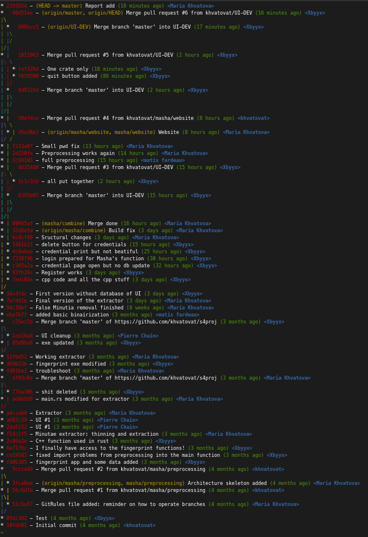

Fingerprints, with their unique ridge and valley patterns, have been a reliable form of identification for decades. The distinctiveness of these patterns ensures a high degree of accuracy in verifying an individual's identity. Our project harnesses this reliability, aiming to deliver a biometric authentication system that is both secure and user-friendly. The goal of this project is to create an advanced security solution that leverages fingeprints for user verification. Building on our previous work with fingerprint recognition, we have now created a real application which aims to provide a higher level of security and accuracy in user authentication.
